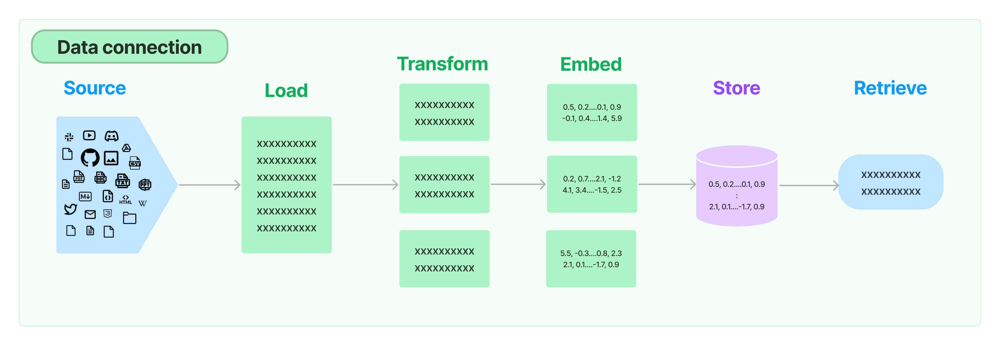
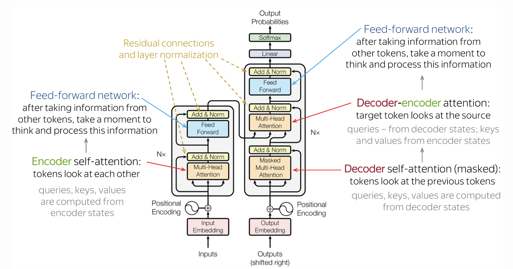

We're living in a time that will be remembered in history, much like when the Industrial Revolution changed everything. Big changes are coming, and they will shake up whole industries. The way we create things and use our knowledge is about to transform. Language, especially through the use of big language models (LLMs) like GPT-3, is going to be super important. It's going to change how we see the world. Every so often, technology takes a huge leap and everything shifts. That's what's happening right now. LLMs are really good at writing, summarizing, thinking, and even making poetry. They're like the best helper for finishing your sentences. They're changing how we write everything— from computer programs to poems, from ads to essays, and even research papers. They're not taking away jobs; they're helping us do them better and faster.
How to make custom LLM chatbots using Langchain and Ollama
1. What is this craze about LLMs?
2. How to harness LLMs?
One of life's greatest pleasures is connecting with art that stirs our emotions. With the progress
in generative AI, I'm excited about how it will unlock even more of our creative abilities, making it
easier for everyone to express themselves truly. But the question is, how can a business protect and
add value to such technology? In my view, the main ways to stay ahead with LLM/AI-first products,
ranked by importance, are:
- Owning unique data and customizing AI models
- Providing a user experience that builds trust and dependability
- Reducing costs for service delivery and implementation
- Developing ways to go to market and distribute the product
- Creating network effects and fostering a community
- Expanding and deepening system integrations
To explain what I mean by expanding and deepening integrations:
Simply adding a basic layer on top of LLM APIs won't set you apart in the AI-first application market.
To lead the pack, you need solid integrations and streamlined processes that address real issues,
with a level of scale and efficiency that LLMs now make possible. For instance, consider LLMs
assisting educators in crafting customized test questions by:
- Linking to the educational content
- Gathering and reformatting the content for better LLM comprehension
- Directing LLMs to generate questions from that content, tailored by factors such as difficulty level
- Employing LLMs to generate accurate answers based on the content
- Improving future question creation by refining the answers generated by LLMs
3. Using Langchain to fine tune LLMs(Llama 2)
The most important ability of Langchain is it's ability to connect our LLMs to external data sources. I use
langchain to fine tune a locally hosted llama2 model so that it can answer questions based on my
work and personal experiences. This consists of 4 stages:
- Running Llama2 using Ollama
- Create a prompt and chainr
- Loading the document using Langchain's Document Loader
- Text Splitter and Chunking
- Selecting relevant documents
- Store embeddings in Vector Store(FAISS)
- Retrieval of the relevant document from the vector store and inject it into chain
Install dependencies:
from flask import Flask, render_template, request, jsonify
import langchain
from langchain_core.output_parsers import StrOutputParser
from langchain.chains import create_retrieval_chain
from langchain.chains.combine_documents import create_stuff_documents_chain
from langchain_community.vectorstores import FAISS
from langchain_text_splitters import RecursiveCharacterTextSplitter
from langchain_community.embeddings import OllamaEmbeddings
from langchain_community.document_loaders import WebBaseLoader
from langchain_community.llms import Ollama
from langchain_core.prompts import ChatPromptTemplate
1. Running Llama2 using Ollama:
Refer Ollama for more details on how to set up a LLM(more specifically Llama2) locally. We need this to be running at all times for our LLM to work. The code below demonstrates how to instantiate the Llama2 model.
llm = Ollama(model="llama2")
2. Create a prompt and chain:
Let's create a prompt and a placeholder for the question and check if the prompt answers questions based on the prompt. We do this by chaining prompt and model together.
prompt = ChatPromptTemplate.from_template("""
Answer the user's question:
Question:{input}
""")
chain=prompt | model
#Run the following code in the terminal to see if it works
response = chain.invoke({"input": "Hello"})
print(response)
3. Loading the document using Langchain's Document Loader:
How can I retrieve data from a data source and feed it to the chain? We want the model to only answer questions about me. This is done by using a document loader to scape data from a webpage. This data acts as context for the LLM. The model will be able to answer questions based on the text data available on that page. You can vary the config parameters like "temperature". "temperature= 0" means that the model will be deterministic and a value of 1 implies maximum volatility or creativity i.e. it will attempt to generate newer texts based on it's understanding of the docs. Now we are fetching the data source dynamically and passing it as a context to the model. The code below demonstrates how to do it in Python(assuming you have installed all the dependencies). This image covers everything related to the retrieval step - e.g. the fetching of the data. Although this sounds simple, it can be subtly complex. This encompasses several key modules.
loader = WebBaseLoader("The website link goes here")
docs = loader.load()
response = chain.invoke({
"input": "What are your qualifications?",\
"context": docs
})
print(response)

4. Text Splitter and Chunking
The above code works but there is a problem. However, there is an issue, the length of the context can be
quite long and all the LLMs have some sort of token limit and if we simply inject the entire webpage, we can
very easily exceed that limit. Futhermore, with OpenAI models and other service providers, we are charged for our
token usage. So it is important to keep the context as small as possible. For answering a question, let's say,
"What are you qualifications?", the model only needs to parse the qualification section and nothing else and that
is the only context it needs(why does it need to parse through hobbies lol?).
The solution is to take all the text in context and chunk it into smaller parts which is what Transform does in the image above and in the code below.
"RecursiveCharacterTextSplitter" splits the document into chunks. The default chunk size is huge, so I have
changed the "chunk_size" to 200 tokens.
text_splitter = RecursiveCharacterTextSplitter(
chunk_size=200;
chunk_overlap=20;
)
splitDocs = splitter.split_documents(docs)
5. Selecting relevant documents
We are not done yet. Next step would be to select the most relevant of these documents; let's say the top 2 or 3 documents and only inject those documents as context. To fetch the most relevant document, we need to perform a semantic or Similarity Search and we can use a Vector Database. It is a special kind of database to store our documents and it provides a function we can call where we can pass in the user's query and the database will only return the relevant documents(Happens in "Retrieve"). Right now, our document are in Langchain format. We need to convert this to a format that the vector database will understand. Embeddings function takes our document and convert it into vectors and store it in the db.
text_splitter = RecursiveCharacterTextSplitter(
chunk_size=200;
chunk_overlap=20;
)
splitDocs = splitter.split_documents(docs)
embeddings = OllamaEmbeddings()
6. Store embeddings in Vector Store(FAISS)
We will store the embeddings using an in-memory data store called FAISS. This is done so that the retriever can efficiently rank different documents and gets the relevant document for a given query.
vector = FAISS.from_documents(documents, embeddings)
7. Retrieval of the relevant document from the vector store and inject it into chain
One important thing about the retrieval chain is that we don't need to manually pass the context but instead, the retriever will fetch the most relevant documents from the vector store and pass the context in the prompt.
document_chain = create_stuff_documents_chain(llm, prompt)
retriever = vector.as_retriever(search_kwargs={"k":1}) #Only retrieves the top most relevant document(k=1)
retrieval_chain = create_retrieval_chain(retriever, document_chain)
response = retrieval_chain.invoke({"input": question})
4. And that's it, we have created a customized chatbot using Langchain!
Modifications: Adding the entire chat history to the context, using the 70B Llama model and deploying it on AWS for free(if anyone knows how to do that, please contact me). To have an intuitive understanding of what's under the hood of a LLM as in the transformer below, refer to Shakul Pathak's Blog.
